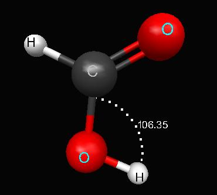
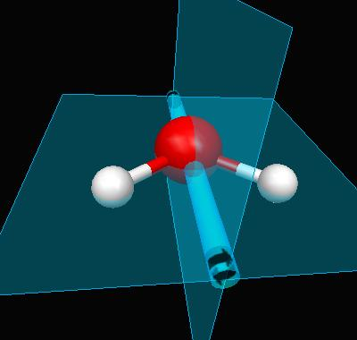
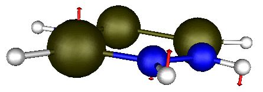
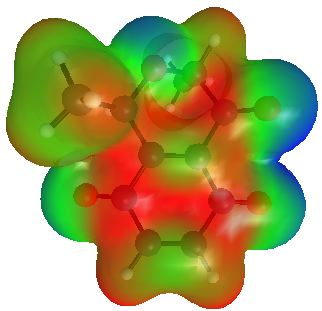

Below are a few samples created directly with
MacMolPlt:
Simple Molecule Display with labels and displaying the bond angle:

Water with the C2v operators.


Quinone with a total electron density surface colorized with the
molecular electrostatic potential value.
